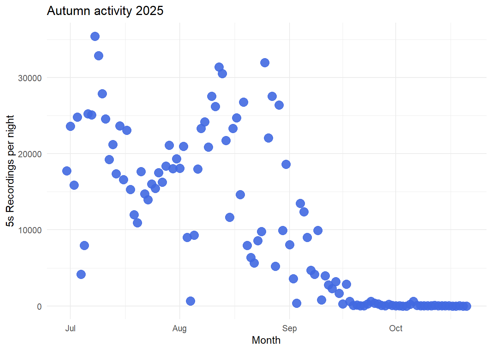
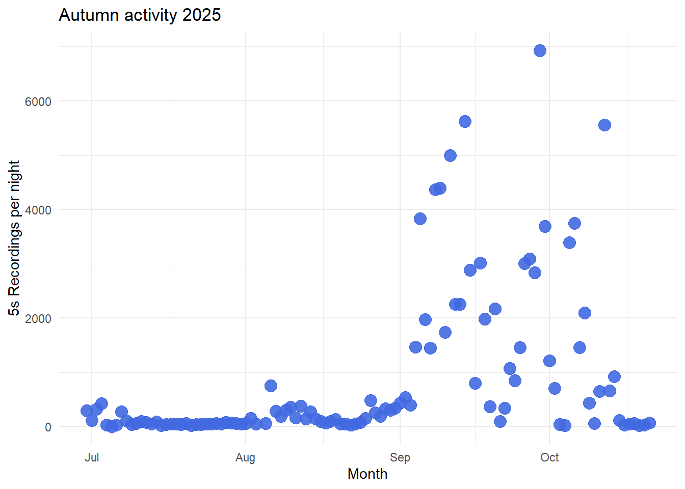
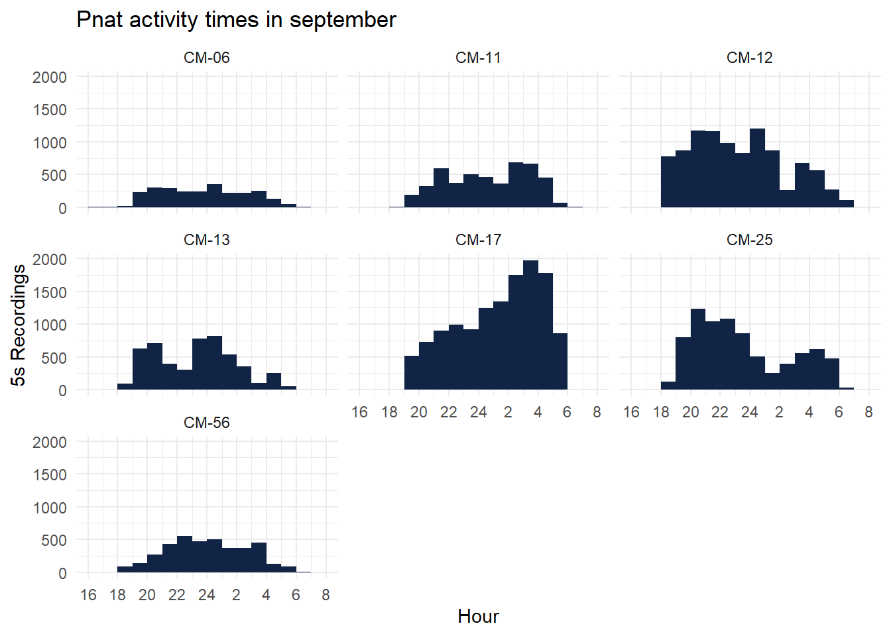
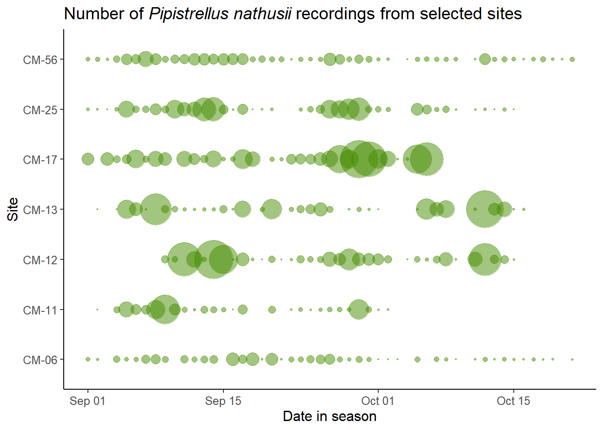

Autumn activity hotspots
Trying to make a visual picture based on coastal monitoring data from 2025. Activity for two species- northern bat and nathusius pipistrelle, on 4 different time periods- II half of August, I half of September, II half of September and October,
Locations
Coastal monitoring sites with a bigger emphasis on sites we could mist net in. Not a lot of activity north of Stavanger. Interesting areas: Stavanger area lakes, coast in Jæren (around Orre and Brusand), Bryne, Lista.
Northern bat
Overall activity
Activity at different times
End of August
Still active, most active sites were the lakesites- Mosvatnet, Stokkalandsvatnet, Taksdalsvatnet and Smokkavatnet. Also Bedehus stands out as an active site for August.
Beginning of September
Not that active anymore, only comparable locations to August are Store Stokkavatnet and Mosvatnet.
Change from August to September
The activity of northern bat decreases in all locations from August to September, the size of the circles represents the activity left of the second part of September.
Nathusius pipistrelle
Overall activity

Activity at different times
Change from August to September
In almost all locations, the activity rose, active locations in the beginning of September: Steinodden, Brusand, Lista, Store Stokkavatnet.The radius of the point shows the comparative activity in September
Change in September
In some locations, orange tones show that the activity does not change, but it does increase in Store Stokkavatnet.The radius of the point shows the comparative activity in the end of September.
October
In warm October, there is still some activity left in the south and around Stavanger.
Time of night
Activity pattern during September nights in 7 potential mist netting locations. Watch out: overall activity can be different because of some outlier nights.
Mosvatnet (CM-06) - Activity drops on cold nights and rainy weather. Lista (CM-11) - Some very active nights around 9th and 10th of September, rest of the month not so active. Steinodden (CM-12) - Some active night around 12, 14, 15 September. Fuglevika (CM-13) - Active night 9th of Sept. Store Stokkavatnet (CM-17) - A lot more activity in the last week of the month. Brusand (CM-25) - More activity 17th to 23rd of September. Bryne (CM-56) - More stable activity, but overall lowel levels than others.

